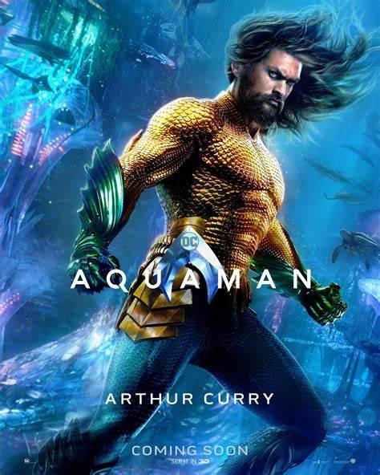
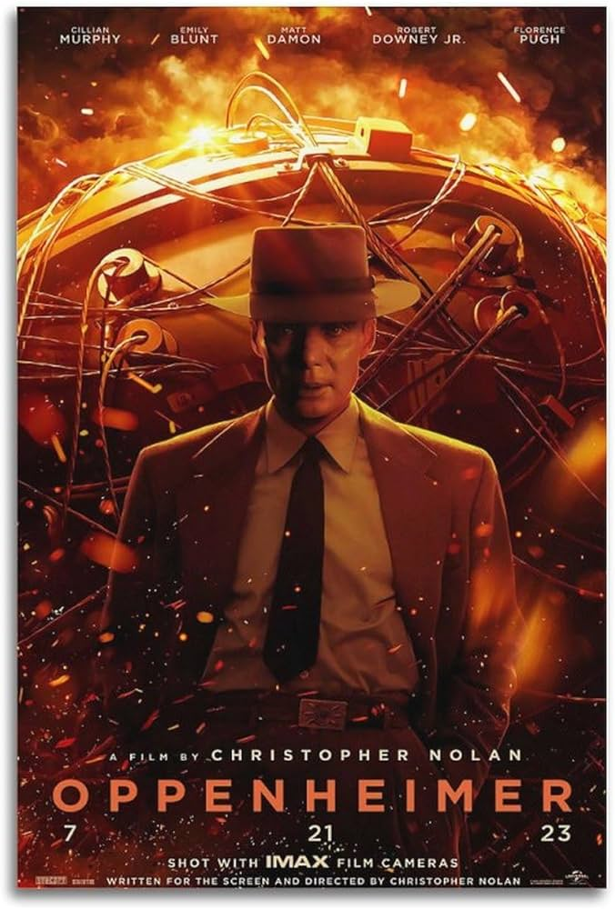

Interestelar
Al ver que la vida en la Tierra está llegando a su fin, un grupo de exploradores dirigidos por el piloto Cooper y la científica Amelia viajan más allá de nuestra galaxia para descubrir algún planeta en otra que pueda garantizar el futuro de la raza humana.
La sociedad de la nieve

En 1972, el vuelo 571 de la Fuerza Aérea Uruguaya, fletado para llevar a un equipo de rugby a Chile, se estrella en un glaciar en el corazón de los Andes. Solo 29 de sus 45 pasajeros sobreviven al accidente. Se ven obligados a recurrir a medidas extremas para mantenerse con vida.
Nowhere
Mía es una mujer embarazada que, junto a su marido, huye de un país totalitario escondida en un contenedor marítimo. Tras ser forzosamente separados, Mía se enfrentará a todo para salvar la vida de su hija y reencontrarse con su pareja.
Campeones

Marco, un entrenador profesional de baloncesto, se encuentra un día, en medio de una crisis personal, entrenando a un equipo compuesto por personas con discapacidad intelectual. Lo que comienza como un problema se acaba convirtiendo en una lección de vida.
Sin novedad en el frente

Relato de las terribles experiencias y la angustia de un joven soldado alemán en el frente occidental durante la Primera Guerra Mundial.
El Hoyo
El futuro, en una distopía. Dos personas por nivel. Un número desconocido de niveles. Una plataforma con comida para todos ellos. ¿Eres de los que piensan demasiado cuando están arriba? ¿O de los que no tienen agallas cuando están abajo? Si lo descubres demasiado tarde, no saldrás vivo del hoyo.
Pozos de Ambición
Texas, principios del siglo XX. Daniel Plainview se traslada a una miserable ciudad con el propósito de hacer fortuna, pero, a medida que se va enriqueciendo, sus principios y valores desaparecen y acaba dominado por la ambición. Intenta apoderarse de un nuevo yacimiento, tiene que enfrentarse al predicador Eli Sunday.
Aquaman
Cuando Arthur Curry descubre que es mitad humano y mitad atlante, emprenderá el viaje de su vida en esta aventura que no sólo le obligará a enfrentarse a quién es en realidad, sino también a descubrir si es digno de cumplir con su destino: ser rey, y convertirse en Aquaman.
Oppenheimer
En tiempos de guerra, el brillante físico estadounidense Julius Robert Oppenheimer, al frente del 'Proyecto Manhattan', lidera los ensayos nucleares para construir la bomba atómica para su país. Oppenheimer se cuestiona las consecuencias morales de su creación.
Barbie
Barbie lleva una vida ideal en Barbieland, allí todo es perfecto, con fiestas llenas de música y color, y todos los días son el mejor día. Cuando Barbie se dé cuenta de que es capaz de apoyar los talones en el suelo, y tener los pies planos, decidirá calzarse unos zapatos sin tacones y viajar hasta el mundo real.
Transformers: El despertar de las bestias
En 1994, un par de arqueólogos se ven envueltos en un antiguo conflicto a través de una aventura por todo el mundo que se relaciona con tres facciones de Transformers: los Maximals, los Predacons y los Terrorcons mientras ayudan a Optimus Prime y los Autobots en una guerra para proteger la Tierra ante la llegada de Unicron.
Elemental
Ambientada en Ciudad Elemento, donde conviven habitantes de fuego, agua, tierra y aire. La protagonista de la historia es Candela, una joven fuerte, ingeniosa y con carácter, cuya amistad con un chico sensible, afable y tranquilo, llamado Nilo, cambia su perspectiva sobre el mundo en el que viven.
Fast X (Fast and Furious 10)
Durante numerosas misiones más que imposibles, Dom Toretto y su familia han sido capaces de ser más listos, de tener más valor y de ir más rápido que cualquier enemigo que se cruzara con ellos. Pero ahora tendrán que enfrentarse al oponente más letal que jamás hayan conocido.
Super Mario Bros: La película

Mientras trabajan en una avería subterránea, Mario y su hermano Luigi, viajan por una misteriosa tubería hasta un nuevo mundo mágico. Pero, cuando los hermanos se separan, Mario deberá emprender una épica misión para encontrar a Luigi. Con la ayuda del champiñón local Toad y la princesa Peach, Mario descubre todo el poder que alberga en su interior.
Creed III
Adonis Creed ha progresado tanto en su carrera como en su vida familiar. Cuando Damian, un amigo de la infancia y antiguo prodigio del boxeo, reaparece después de cumplir una larga condena en prisión, Adonis Creed quiere demostrar que merece una oportunidad en el ring. Para ajustar cuentas, Adonis debe arriesgar su futuro para enfrentarse a Damian.
M3gan
Diseñada por Gemma, M3GAN es capaz de escuchar, observar y aprender mientras se convierte en amiga, profesora, compañera de juegos y protectora del niño al que se vincule. Cuando, inesperadamente, Gemma se convierte en la tutora legal de Cady, no sabe muy bien qué hacer ni se siente preparada para ejercer de madre. Gemma decide vincular su prototipo de M3GAN a Cady, pero no tardará en descubrir las inimaginables consecuencias de su decisión.
Operación Fortune: El gran engaño
El agente del MI6 Orson Fortune y su equipo reclutan a una de las estrellas de cine más importantes de Hollywood, para que los ayude en una misión encubierta para rastrear y detener la venta de nuevas tecnologías de armas mortales, a manos del multimillonario Greg Simmonds.
Lift: un robo de primera clase
Una banda internacional de atracadores recibe el encargo de evitar un ataque terrorista. Para ello, deberán llevar a cabo un atraco en un avión en pleno vuelo.
Vacaciones de verano

Dos amigos, Oscar y Félix, pierden su trabajo y se ven obligados a aceptar un trabajo temporal como animadores infantiles en un hotel de lujo. Al ser ambos divorciados, les tocan sus hijos un mes de verano y les es imposible compaginarlo con el trabajo, con lo cual deciden llevarse a los niños y ocultarlos en el hotel pero el plan resulta ser un desastre.
Astérix y Obélix y el reino medio
Ayudada por Granodemaíz, el comerciante fenicio, y su fiel guardaespaldas Wang Tah, la única hija de la Emperatriz, la Princesa Fo Yong, huye a la Galia para pedir ayuda a dos valientes guerreros, Astérix y Obélix, quienes están dotados de una fuerza sobrehumana gracias a su poción mágica. Nuestros dos inseparables galos aceptan por supuesto ayudar a la Princesa a salvar a su madre y liberar a su país. Y así comienza un gran viaje y aventura rumbo a China.